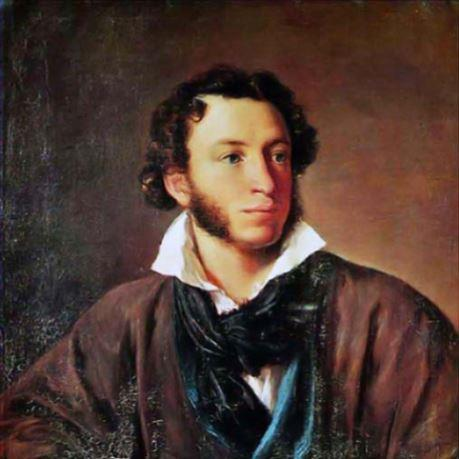

Le 27 août dernier, au lendemain de la clôture du sommet du G7 à Biarritz, le président de la République, Emmanuel Macron, intervenait, comme c’est l’usage, devant les ambassadeurs réunis pour leur conférence annuelle. Comme il l’avait fait quelques jours plus tôt à Brégançon où il recevait le président russe, Vladimir Poutine, il a développé les arguments qui militent en faveur d’un rapprochement avec la Russie ; il a ainsi, de fait, lancé les orientations d’une très nette inflexion politique pour la France, mais aussi pour l’Europe.
C’est dire si le thème des relations franco-russes et, au-delà, russo-européennes, est plus que jamais d’actualité.
Pourtant, les obstacles sur le chemin d’une réflexion sereine et rigoureuse sur ce sujet ne manquent pas, à commencer par le mot fameux :« La Russie est un rébus enveloppé de mystère au sein d’une énigme ».
Voilà qui pourrait décourager l’observateur de se hasarder à pousser plus avant les recherches.
Il est vrai néanmoins que l’auteur de l’appréciation rappelée ci-dessus, Winston Churchill, est lui-même citoyen d’un pays dont l’étrangeté ne le cède en rien à celle dont il crédite le plus vaste état de la planète. Toute notre histoire commune en témoigne jusqu’à l’ultime épisode abracadabrantesque du « Brexit » en cours.
On conviendra que cette observation ne peut qu’encourager à ne pas se laisser intimider par la formule churchillienne et à persévérer dans le questionnement relatif à nos relations avec la Russie.
En effet, ne sommes-nous pas à l’heure où l’on nous ressuscite un ennemi russe, comme au bon vieux temps de l’URSS, du monde bipolaire et de la Guerre froide ?
De fait, les relations entre les nations d’Occident, auxquelles s’assimilent désormais la plupart des anciens « satellites » de la défunte URSS en Europe orientale, et la Russie de Vladimir Poutine, exhalent aujourd’hui de forts relents de « Guerre froide ».
Il est vrai que le retour russe à une politique de puissance après les humiliations qui ont suivi l’implosion de l’URSS ne laisse pas d’inquiéter.
Sur ce registre, l’annexion de la Crimée à la faveur de la crise ukrainienne a marqué un tournant.
D’exclusion du G8 en sanctions diverses et en mesures militaires gesticulatoires, tout se passe comme si la Russie était mise au ban des nations d’Occident dans le même temps où les rangs devraient se resserrer derrière le grand frère américain, conforté en garant de la sécurité des nations européennes face à une potentielle menace russe.
Or, tout cela survient en un temps qui marque une rupture avec le monde bipolaire d’antan.
Depuis la chute du mur de Berlin suivie de la disparition du « bloc soviétique », nous sommes entrés dans une ère nouvelle.
L’expression n’est pas surfaite si l’on veut bien considérer que ce temps est marqué par la conjugaison de phénomènes radicalement nouveaux en matière de géopolitique :
Une interdépendance jamais égalée des nations dans un monde globalisé.
L’accession de l’immense Chine au rang des puissances majeures.
Le réveil convulsif d’une nébuleuse islamique génératrice de chaos dans sa variante fondamentaliste avec un terrorisme planétaire comme mode opératoire.
Des flux migratoires sans précédent sur fond de profondes disparités économiques et démographiques.
Dans le même temps nous vivons une révolution numérique dont nul ne perçoit les développements exponentiels et, simultanément, une mise en péril des équilibres naturels planétaires jusque-là inconnue sur une aussi courte période.
Dans ces conditions, comment les schémas géopolitiques et stratégiques du monde bipolaire de l’après Deuxième Guerre Mondiale pourraient-ils retrouver quelque pertinence ?
Or les postures euro-américaines à l’œuvre face à la Russie participent de ces schémas ; leur validité est donc pour le moins discutable. Il y a là comme une démarche somnambulique dont il urge de se dégager pour considérer les réalités du monde et de son avenir plus que jamais incertain.
À cela, il est des raisons positives : il n’y aura pas d’avenir pour une Europe maîtresse de son destin, donc pour la France, sans partenariat lucide et exigeant avec la Russie. Nous devons nous en convaincre.
Mais il faudra pour cela abattre le redoutable mur de défiance qui s’est reconstruit à peine le Rideau de fer avait-il été démantelé.
Il est aussi d’autres raisons plus dérangeantes : il est temps de prendre conscience du caractère délétère de l’emprise américaine pour cet avenir européen. Les initiatives du président américain pourraient faire douter de sa légitimité à exercer le leadership de ce que l’on appelait jadis le « monde libre » ; elles ont néanmoins le mérite d’être éclairantes sur ce point.
C’est donc à une révolution copernicienne que nous sommes invités, non pas à un renversement des alliances selon les schémas d’autrefois, mais à une émancipation de l’Europe dans le droit fil des géniales intuitions gaulliennes d’il y a un demi-siècle. Encore faudra-t-il surmonter de redoutables obstacles dont il importe de prendre la mesure.
Tel sera le cheminement de notre réflexion.
Europe et Russie : une symbiose dictée par la géographie et la culture
Au temps du monde bipolaire et de la Guerre Froide le général de Gaulle a pu évoquer à de multiples reprises « l’Europe de l’Atlantique à l’Oural » tout en prenant le parti de parler de « la Russie » s’agissant de l’URSS. Il voulait ainsi signifier qu’au-delà des aléas de l’histoire, en l’occurrence la révolution bolchevique, des réalités profondes et sous-jacentes demeuraient pérennes, les unes géographiques, les autres humaines et culturelles.
Les quelques esprits libres qui voulaient bien le suivre, à rebours des sarcasmes de ceux qui ne voyaient là que marotte d’un homme du passé, ont eu dans les trente dernières années l’éclatante démonstration de la justesse de cette vision.
Tout commence, comme souvent avec le général de Gaulle, par un truisme : l’Europe, telle qu’elle s’est définie à travers les siècles, s’étend de l’Atlantique à l’Oural et la Russie en fait bien partie.
Il est vrai que, vue de l’espace, cette Europe n’est qu’une sorte de péninsule occidentale d’un vaste continent eurasiatique ; d’ailleurs aucune limite géographique ne s’est opposée à l’expansion russe sur les immenses espaces sibériens jusqu’à l’Extrême-Orient, pour en faire le plus vaste État de la planète.
C’est dire si la géographie nous invite à ne désolidariser en rien l’Europe occidentale, non seulement de la Russie d’Europe, mais aussi de ses considérables extensions asiatiques.
Dans le monde fini qui est le nôtre, l’Europe a là, via la Russie, son « Far East ». Il n’est pas jusqu’au réchauffement climatique, au-delà de ses effets cataclysmiques, qui n’ouvre, dans toute l’étendue de ces immenses espaces, des perspectives nouvelles.
Comment ne pas voir que nos vieux pays, riches de savoir et de capacités mais pauvres en ressources naturelles, sont les partenaires naturels de la Russie pour la mise en valeur des espaces infinis de la Russie d’Asie ? Il y a là une opportunité historique féconde pour l’avenir. Nous n’avons que trop tardé pour la saisir.
La culture nous y invite non moins.
Lorsque nous évoquons Dostoïevski, Tolstoï, Gogol, Pouchkine, Tchekhov, Tourgueniev, Soloviev, jusqu’à de nos jours Soljenitsyne, ne les plaçons-nous pas de fait au rang des géants de la littérature européenne qui sont les piliers d’une culture commune ? Et que dire de Prokofiev, Stravinsky, Rimski-Korsakov ou bien encore Borodine pour la musique ? Et que seraient les sciences sans l’immense cohorte des mathématiciens et physiciens russes ?
De même, si, volens nolens, nous Européens de l’ouest sommes, sur le temps long, les héritiers de Rome et de l’Empire romain d’Occident, la Russie est la 2e Rome, héritière quant à elle, de Byzance et de l’Empire romain d’Orient. Là sont nos racines profondes et elles sont communes dans la mesure ou l’un et l’autre empires sont frères jumeaux, ensemble nourris d’une pensée grecque qu’ils nous ont transmise, enrichie du message évangélique
Après sept décennies d’un régime totalitaire qui prétendait créer un homme nouveau au nom de l’utopie communiste dans sa variante bolchevique, quelle ne fut pas la surprise de beaucoup de voir ressurgir la Russie orthodoxe, sa foi et ses fastes ! Conformément à la vision gaullienne, cette Russie-là était demeurée, comme le feu sous la cendre. La voilà qui renait aujourd’hui.
Lorsqu’est tombé le « Rideau de fer » -encore une expression churchillienne- et qu’a implosé l’empire des soviets, voici trois décennies, l’ouverture l’un à l’autre des deux mondes était, sur ce registre, riche de promesses.
Malheureusement, les Occidentaux n’ont en rien conçu cette ouverture comme la possibilité désormais offerte d’échanges où chacun aurait eu autant à donner qu’à recevoir.
Tout à la divine surprise d’avoir « gagné la Guerre froide », on n’a eu, de la part de l’Occident, qu’arrogance et condescendance : la Russie devait faire table rase de son passé et il revenait aux « vainqueurs » de dispenser les ferments de la démocratie et du libéralisme sur les ruines du monde soviétique. Dans les faits, la Russie se trouva livrée au capitalisme le plus débridé et les échanges entre les deux mondes furent et restent, pour l’essentiel, marchands.
Sa Sainteté le Patriarche KyrillIl n’est pas jusqu’à l’Église Catholique qui ne se soit inscrite dans ce mouvement : alors même que renaissait l’orthodoxie en Russie mais aussi dans tous les pays de même culture jusque-là soviétisés, les Uniates, ces chrétiens d’orient restés fidèles à Rome, n’hésitaient pas à occuper un terrain qui n’était pas le leur. Le tragique démembrement de la Yougoslavie dont la résurgence de l’antagonisme séculaire entre Croates catholiques et Serbes orthodoxes fut l’une des composantes barbares vint alourdir le contentieux d’affrontements sanglants.
Voilà qui devait couper court à un rapprochement historique entre les deux grandes cultures chrétiennes séparées depuis plus d’un millénaire.
Or, qui ne voit le caractère fécond qu’aurait pu revêtir ce rapprochement, la pensée orthodoxe et la pensée occidentale latine s’enrichissant mutuellement tel qu’en rêvait Soloviev voici plus d’un siècle ?
Pour cette fécondation mutuelle de nos cultures, il n’est pas trop tard. On peut même penser qu’à l’heure où la domination planétaire de l’homme blanc est manifestement en reflux, se présente là une opportunité à ne pas manquer : celle d’une nouvelle Renaissance.
Voilà pour la géographie et pour la culture : au prisme de l’une comme de l’autre, s’impose entre les nations d’Europe et la Russie une symbiose étroite à organiser et à orchestrer. Dans notre monde désenchanté et face à un avenir lourd de menaces de toutes natures, une telle perspective trace un chemin de renouveau.
…qui se heurte à un mur de défiance
Que l’on examine maintenant la question au regard de la situation géopolitique du monde et la symbiose n’apparaît plus seulement comme une invitation, c’est une nécessité historique.
En Europe même d’abord, la logique de confrontation avec le voisin russe qui s’est installée depuis les Pays Baltes jusqu’à la Géorgie en passant par la Pologne et l’Ukraine nous fait entrer dans l’avenir à reculons.
Elle hypothèque notre capacité commune à relever les grands défis de ce temps, que sont, bien plus prégnants qu’un hypothétique péril russe, l’hydre du terrorisme islamiste et les flux migratoires sur fond de profonds déséquilibres démographiques et économiques, sans omettre les changements climatiques lourds de bouleversements à venir, ou encore le rôle planétaire désormais joué par la Chine. Face à ces réalités du monde d’aujourd’hui et de demain, nul doute que les intérêts de la Russie et de l’Europe soient rigoureusement convergents.
Rien donc n’importe plus que de substituer à la funeste logique de confrontation une politique de confiance fondée sur nos intérêts mutuels1.
Certes, il ne faut pas pécher par angélisme et chacun sait que les Russes sont de redoutables joueurs d’échec. Mais, prompts que nous sommes à identifier et stigmatiser comme seule responsable des tensions une politique russe qui, s’appuyant notamment sur ses minorités, fait peser sur les anciens vassaux de l’URSS en Europe orientale une menace de reprise de tutelle, nous éludons la responsabilité considérable de l’Occident dans les décennies qui ont suivi la dislocation du bloc soviétique.
On ne débattra pas ici du point de savoir si des engagements pris auprès de Michaël Gorbatchev par le représentant des Etats-Unis, notamment le secrétaire d’état James Baker en 1990, quant à un éventuel élargissement de l’OTAN, ont été trahis ou non.
Pour les Russes, cela ne fait pas débat : les Américains ont trahi leur parole.
En Occident, on estime généralement qu’aucun engagement n’avait été pris.
En fait, la réalité historique était sans doute que, côté russe, l’élargissement de l’OTAN était alors inimaginable et, côté occidental, la question était plutôt de savoir si cette OTAN avait encore quelque raison d’être…
Mieux vaut donc s’en tenir aux faits ; on ne peut alors que constater qu’à tout le moins des maladresses considérables ont été commises.
Dès lors qu’implose le bloc soviétique au début des années 90, tout se passe comme si l’interventionnisme de « l’hyperpuissance » américaine ne se connaissait plus de limites. S’ouvre alors une spirale de défiance qui ira crescendo.
À peine l’Allemagne est-elle réunifiée en 1990 et, de ce fait, la zone couverte par l’OTAN élargie vers l’Est jusqu’à la ligne Oder-Neisse, que l’Amérique prend la tête d’une « croisade » -le mot est de Georges Bush- contre l’Irak pour la première Guerre du Golfe.
L’apparente légitimité de cette guerre en riposte à l’invasion du Koweit par Saddam Hussein masque des réalités plus complexes qui sont interprétées à Moscou comme une démonstration de force d’un impérialisme américain cynique et sans retenue, s’engouffrant dans le vide laissé par l’effondrement de la puissance soviétique.
Suivent alors quelques années de tâtonnement où la question de la pérennité de l’OTAN se posait à coup sûr. Cette alliance défensive face au péril soviétique tel qu’il apparaissait au lendemain de la guerre avait perdu sa raison d’être.
C’était oublier le mot du général de Gaulle de janvier 1966 lors de la conférence de presse où il annonce le retrait de la France de l’OTAN en tant que structure militaire intégrée : il n’hésite pas à mettre en cause un « protectorat américain …organisé en Europe sous couvert de l’OTAN ».
L’OTAN instrument d’un « protectorat » ? L’expression n’a sans doute pas vieilli. Tout se passe alors comme s’il fallait lui trouver une nouvelle justification.
L’année 1995 marque pour cela un tournant. Saisissant l’opportunité procurée par l’impuissance européenne - essentiellement franco-allemande- à mettre un terme à l’embrasement de l’ex-Yougoslavie, l’intervention américaine en Bosnie via l’engagement de l’OTAN contribue à redonner à cette organisation la raison d’être qui lui faisait désormais défaut2.
Un pas significatif vient d’être franchi : avec la Serbie désignée comme l’ennemi, nous sommes dans la zone d’intérêt russe. Pour autant, le rapport de force est tel que les Russes doivent se contenter d’un rôle de partenaire obligé qui n’a pas vraiment voix aux décisions.
Fin de la première partie- Suite dans le prochain « Méthode ».
J-R. B.
NOTES
1 L’identification et l’analyse de ces intérêts convergents en tous domaines -économiques, politiques, culturels, scientifiques ou encore démographiques - mériteraient des développements particuliers qui ne seront pas approfondis dans ce texte de synthèse.
2 Cf « Sarajevo 1995, mission impossible » par Jean-René Bachelet Ed Riveneuve
Partager cette page